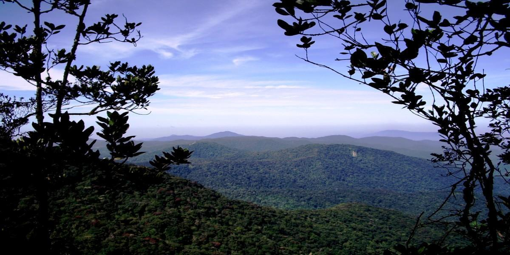
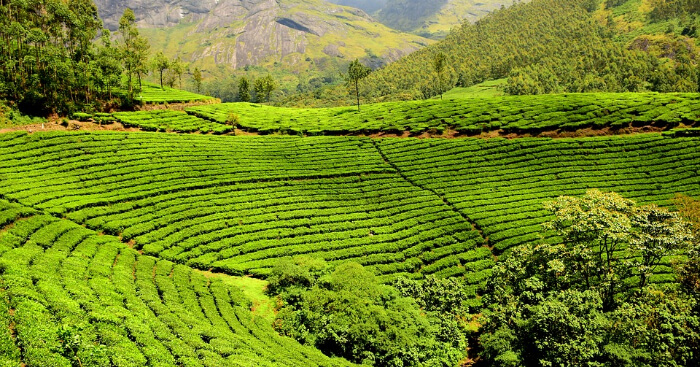

© 2024 MYEXPLORE. All rights reserved.
Mossy Forest is a mystical, high-altitude rainforest located in the Cameron Highlands, Malaysia. Situated along the slopes of Gunung Brinchang, this ancient forest is enveloped in mist and clouds, creating a cool and damp environment that fosters the growth of a unique ecosystem. The forest is renowned for its thick layers of moss, ferns, orchids, and other exotic plant species, giving it a surreal, almost otherworldly appearance. Rich in biodiversity, the Mossy Forest is a haven for nature enthusiasts, offering visitors a chance to explore its enchanting trails and experience the serene beauty of one of Malaysia's most unique natural treasures.
The Mossy Forest is located at a high altitude, so it's cool and misty throughout the year. The best time to visit is during the dry season, from March to September, when the trails are less muddy and more accessible.
Combine your visit to the Mossy Forest with a trip to the nearby Gunung Brinchang, the highest peak in Cameron Highlands. The viewpoint offers panoramic views of the surrounding landscape.
The Cameron Highlands are famous for their tea plantations. After visiting the Mossy Forest, consider stopping by a tea estate for a tour and some tea tasting.
The forest is at a high altitude, so take it easy if you’re not accustomed to such conditions. If you feel dizzy or short of breath, take a break or head back down.
Leeches are common in the forest, especially during the rainy season. Consider wearing leech socks and applying insect repellent.
© 2024 MYEXPLORE. All rights reserved.